Every therapy at Verdant Life is grounded in traditional healing wisdom
and guided by certified naturopathic clinicians. Select any therapy
below to review its complete 10-point presentation, preparation
guidelines, and consultation details.
Individualized, medically attuned yoga practices that restore physical alignment, relieve joint strain, and cultivate breath-anchored mindfulness.
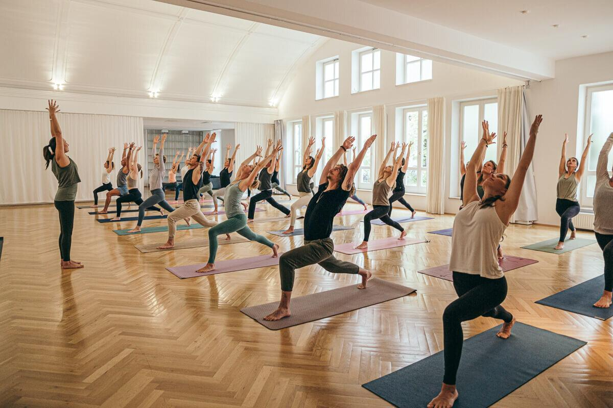
Postural AlignmentClassical deliberate physical postures held with steady breath awareness to cultivate somatic strength, spinal resilience, and centered poise.
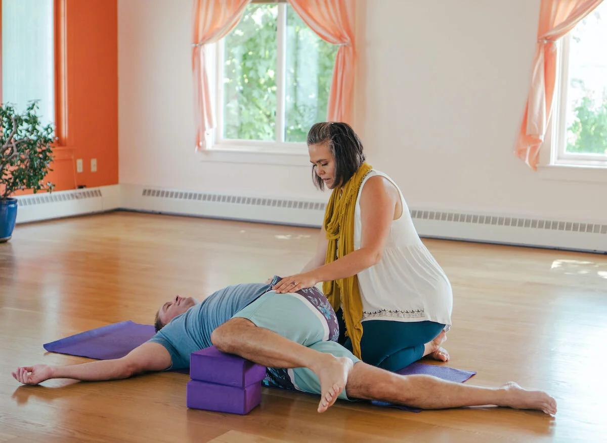
Nervous ResetFully propped passive postures held for extended intervals, enabling deep release of chronic muscular tension and autonomic relaxation.
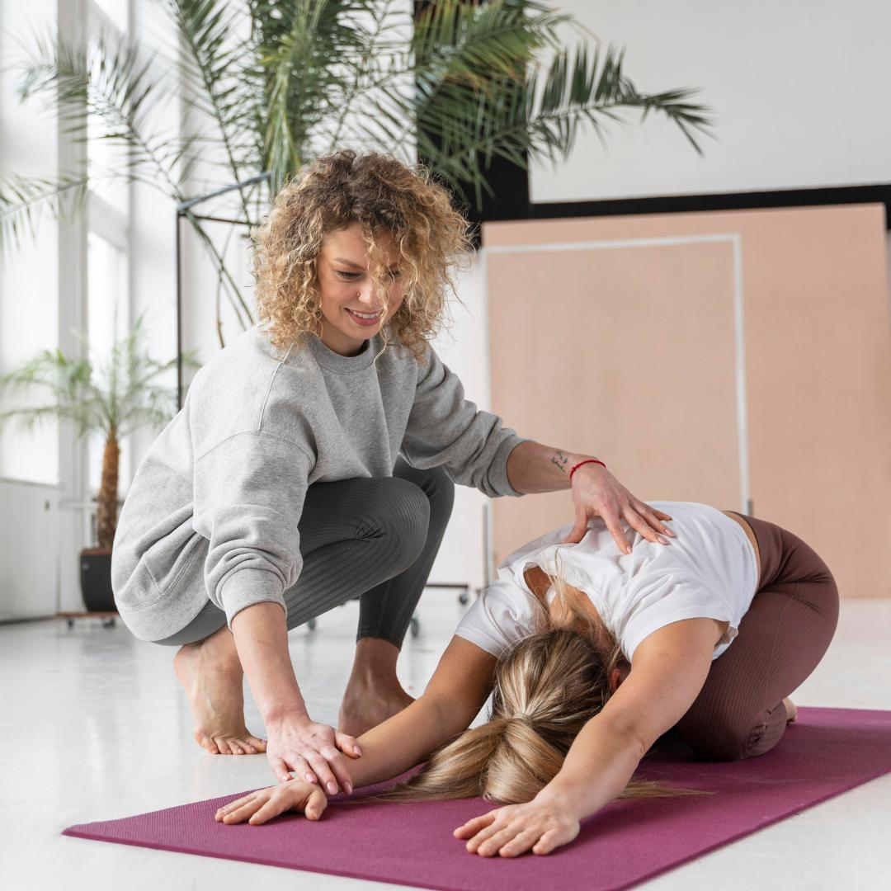
Accessible MobilityUnrushed movements and supported floor stretches tailored for beginners, seniors, or those re-entering physical activity after fatigue.
 Pranayama
Pranayama
Structured yogic pranayama techniques including diaphragm expansion, alternate nostril cadence (Nadi Shodhana), and cooling breaths.
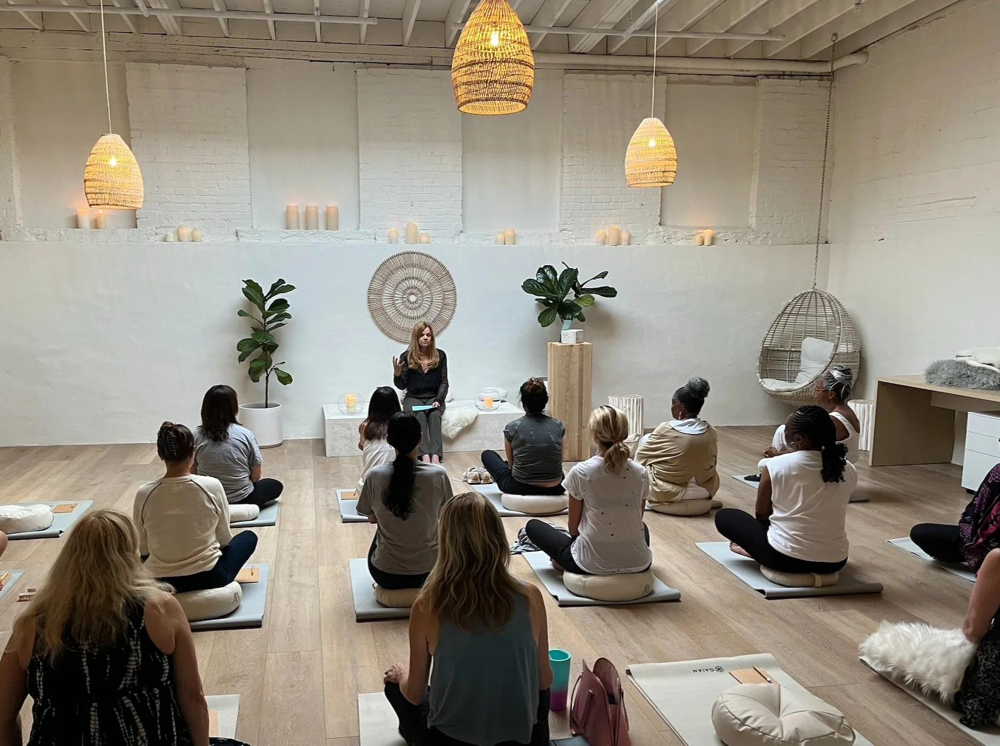
Mental StillnessFocused contemplative sessions leading practitioners through sensory awareness, gratitude cultivation, and somatic body scans.
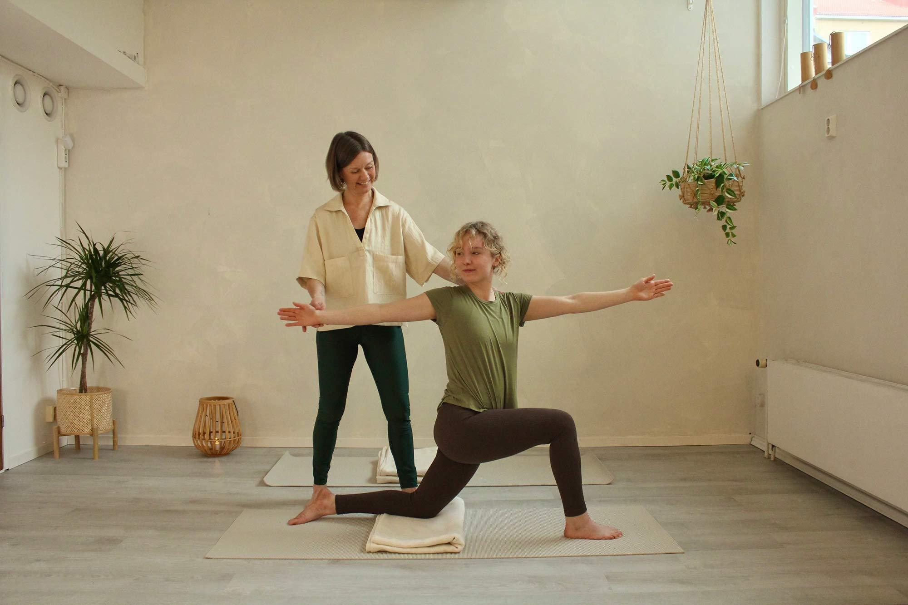
Somatic FlowTherapeutic somatic sequencing bridging physical therapy principles and classical yoga postures for conscious neuromuscular relearning.
Classical nature-cure modalities utilizing elemental hydrotherapy, purified mineral mud, and traditional thermal therapies to nurture physiological vitality.


Sustainable whole-food dietary education, circadian rhythm alignment, and practical lifestyle habits to nourish everyday vitality without extreme restrictions.
 1-on-1 Guidance
1-on-1 Guidance
Individualized dietary roadmaps crafted by naturopathic nutritionists to address meal schedules, nutrient density, and digestive comfort.
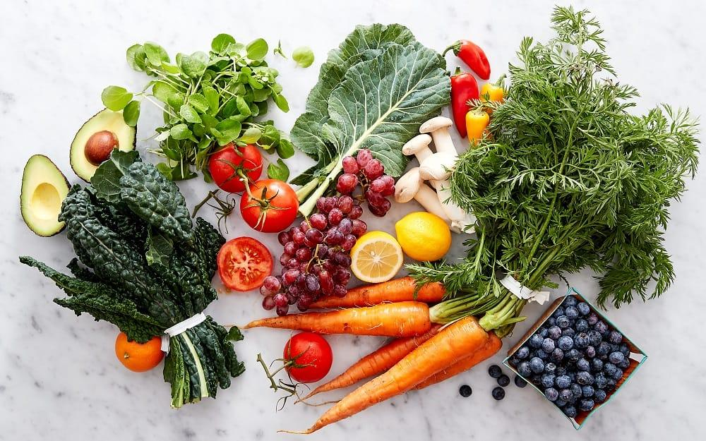
Plant NutritionInteractive culinary workshops demonstrating how to select antioxidant-dense rainbow produce, understand food synergy, and avoid hyper-processed foods.
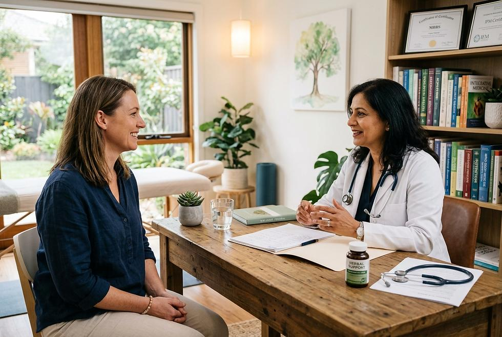
Habit DesignIn-depth evaluations of your work cadence, screen exposure, sleep habits, and stress factors to engineer sustainable daily lifestyle boundaries.
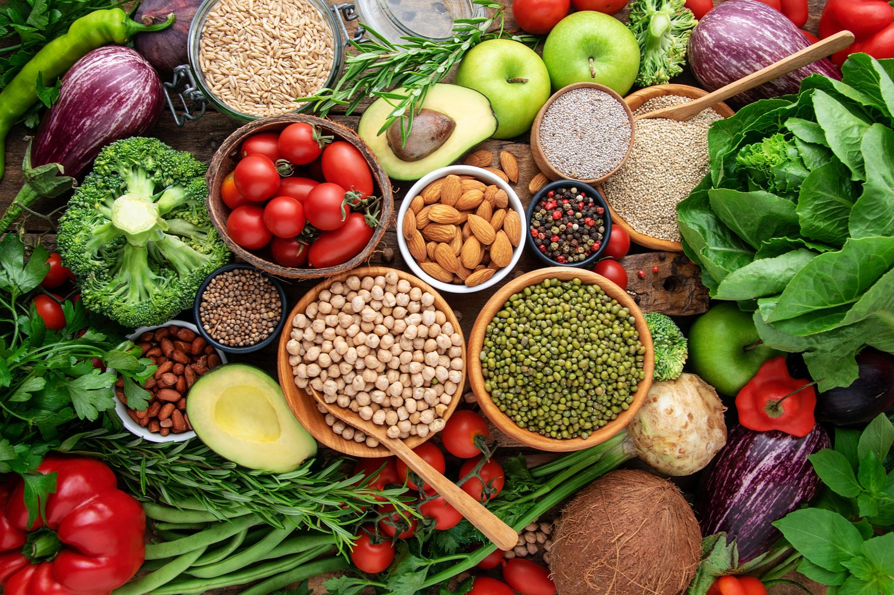
Daily CadenceStructuring morning wakeful rituals, mindful hydration, mid-day digestive pauses, and evening digital sunsets for steady circadian vitality.
 Sattvic Dining
Sattvic Dining
Experiential dining sessions exploring mastication awareness, sensory appreciation, and eating in calm environments to optimize digestive enzymes.
Gentle vegetable infusions, hydrating cold-pressed greens, and digestive herbal teas designed to support normal hepatic and bowel elimination.
Holistic somatic modalities, guided relaxation, sound immersion, and stress-buffering therapies designed to harmonize psychological and physiological states.
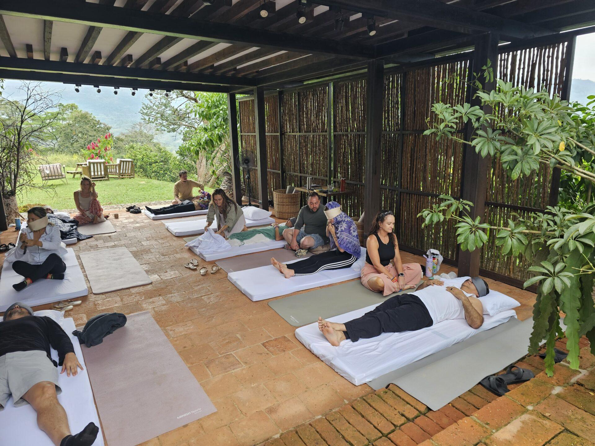
Yoga NidraSystematic rotation of conscious awareness and breath calming practiced lying down in Savasana to induce deep restorative brainwave states.
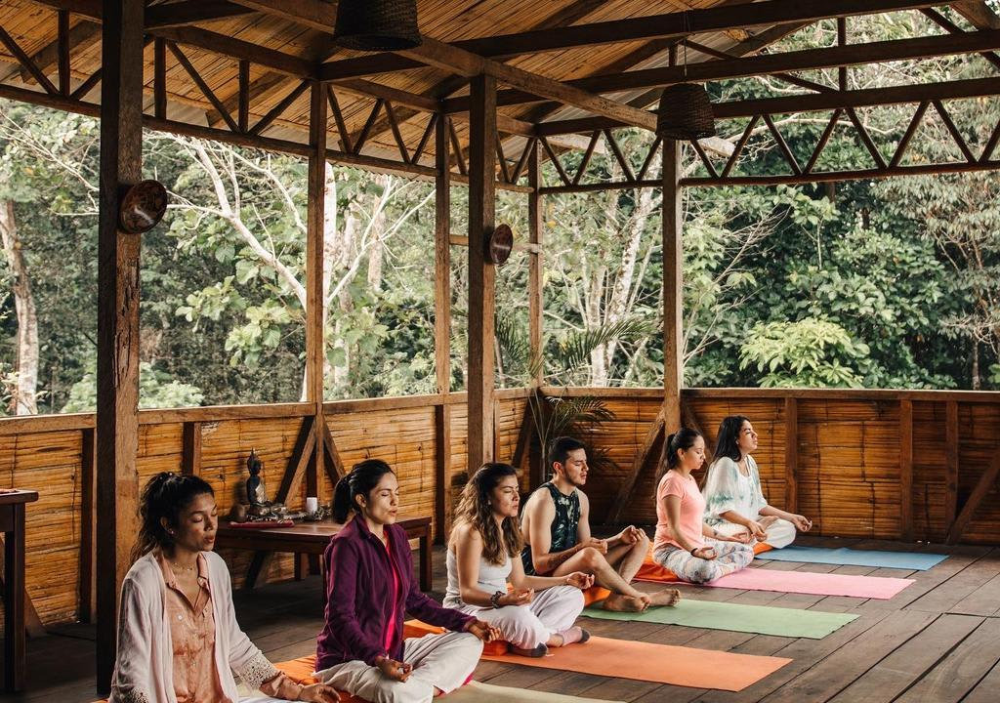
Open PresenceCultivating present-moment witness awareness through guided seated contemplation in our bamboo meditation pavilion amidst nature.
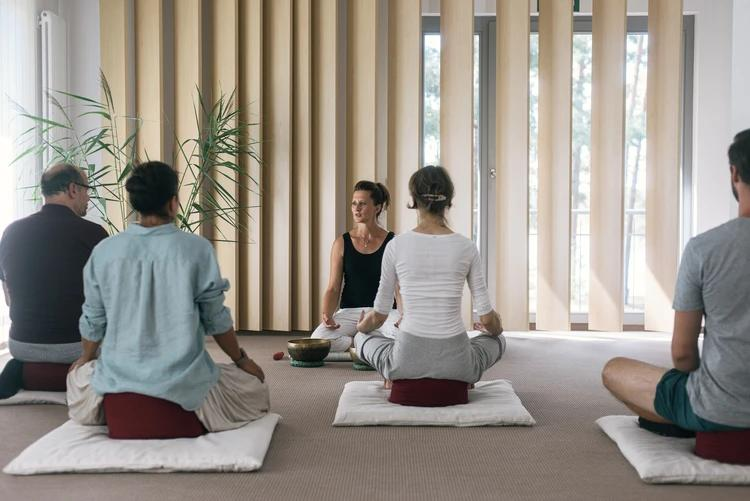
Vagus NerveTechniques focusing on prolonging the exhalation phase to stimulate parasympathetic vagal activity, slow racing thoughts, and ease chest tightness.
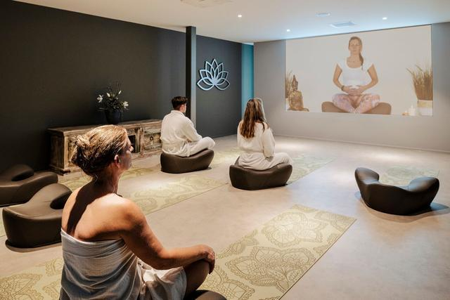
Somatic CopingEducational seminars deconstructing the physiology of the stress response and providing practical biofeedback-inspired somatic tools.
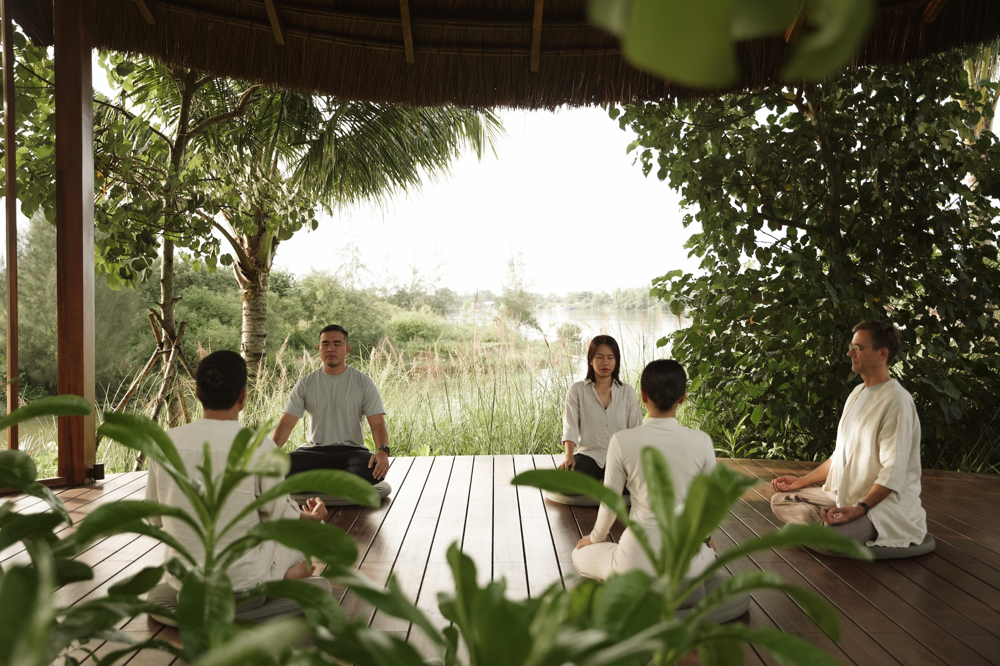
Lake ShalaImmersive group meditation conducted in open-air lakeside pavilions surrounded by gentle water ripples and morning forest sounds.
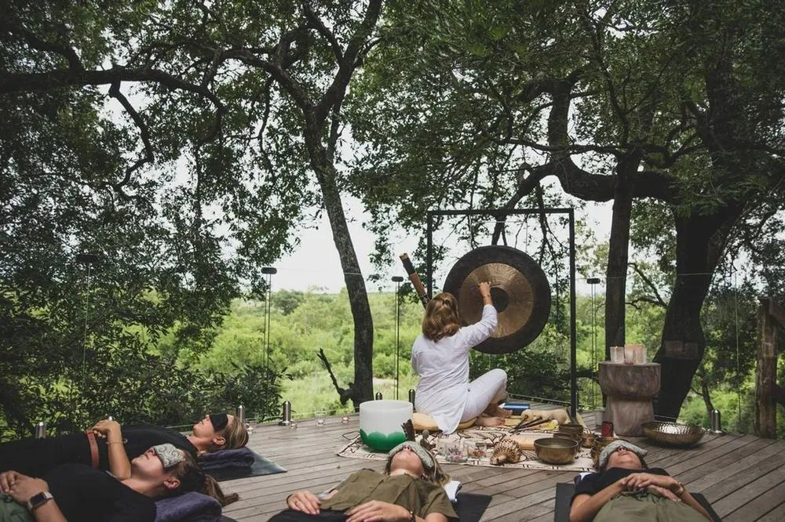
Acoustic TherapyAcoustic vibrational baths utilizing tuned bronze gongs, quartz crystal singing bowls, and chimes to coax racing minds into theta wave relaxation.
Our clinical team will happily review your lifestyle context and recommend a coordinated therapeutic plan during your initial visit.
Book An Initial Evaluation